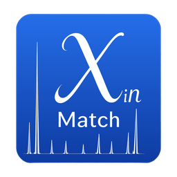

XinMatch
Open-source powder XRD phase-analysis platform: search-match, sequential multi-phase identification and Rietveld quantification, with a PySide6 GUI, CLI and Python library API.
Python
View repository